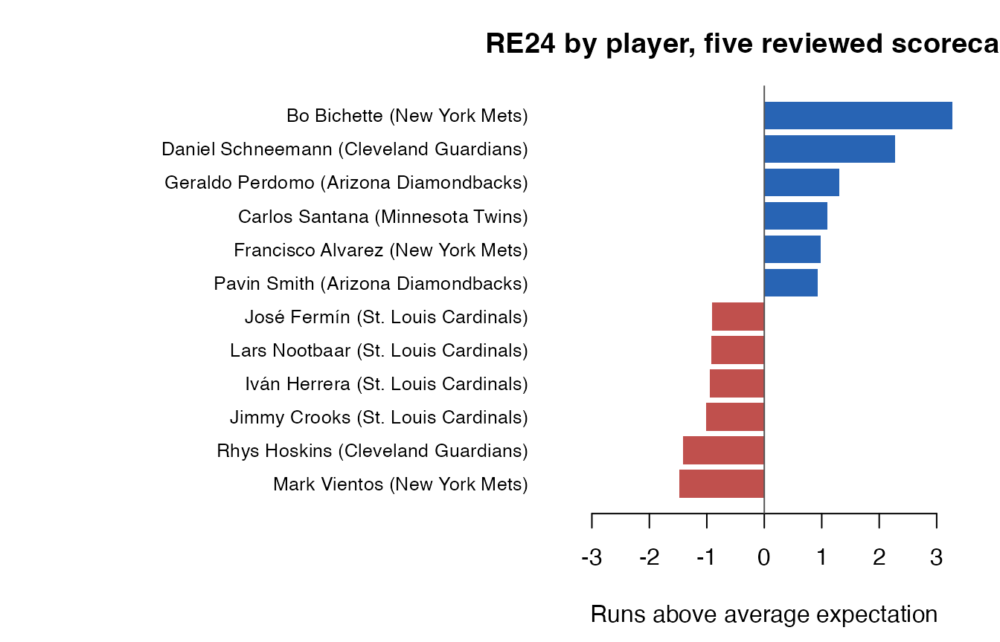
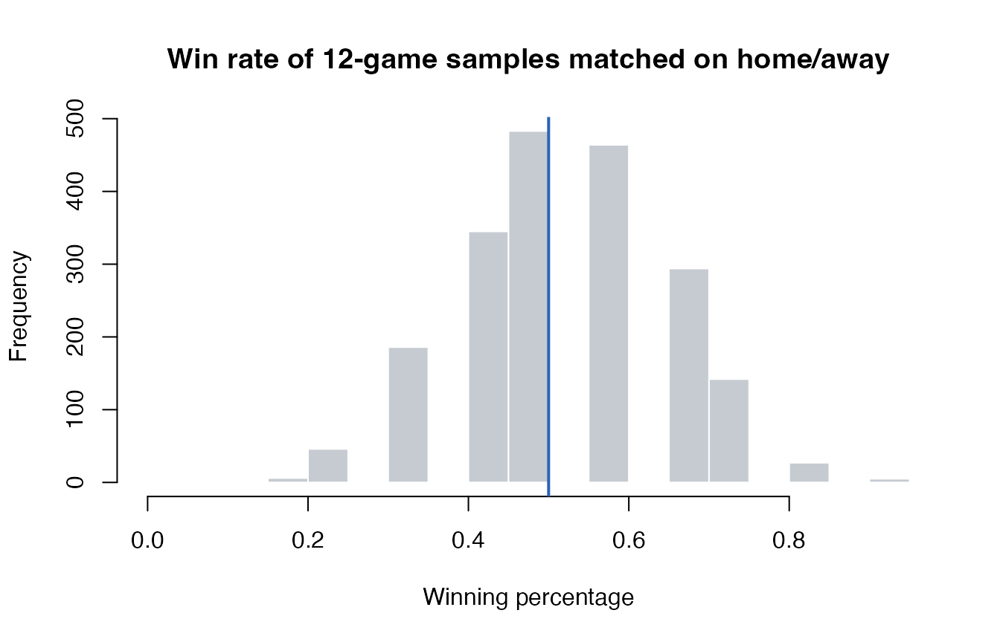

From scorecard to run value
Source:vignettes/from-scorecard-to-run-value.Rmd
from-scorecard-to-run-value.RmdA scorecard records what each batter did. It does not say how much each result was worth. A two-out single with the bases empty and a bases-loaded single both count as one hit, but the second changes the game far more. This vignette walks through five real scorecards, from batting lines to situational run value, called RE24, and then places a scored game inside its team’s full season.
1. Reviewed scorecard plays
reviewed_scorecards holds 179 plate appearances read
from five handwritten team scorecards by the dAImond Inning app and then
reviewed against MLB game records. Each card covers one team’s side of
one game.
d <- reviewed_scorecards
table(d$team)
#>
#> Arizona Diamondbacks Cleveland Guardians Minnesota Twins
#> 35 33 35
#> New York Mets St. Louis Cardinals
#> 41 35
head(d[c("game_id", "player", "inning", "play")])
#> game_id player inning play
#> 1 825071 Ketel Marte 1 flyout
#> 2 825071 Ketel Marte 3 groundout
#> 3 825071 Ketel Marte 5 groundout
#> 4 825071 Ketel Marte 7 single
#> 5 825071 Geraldo Perdomo 1 walk
#> 6 825071 Geraldo Perdomo 3 lineoutBatting statistics come straight from these plays. Team rates pool counts across players rather than averaging player rates.
batting <- calculate_batting_stats(d)
counts <- c("PA", "AB", "H", "BB", "HBP", "SF", "TB")
team <- aggregate(batting[counts], batting["team"], sum)
team$OBP <- with(team, (H + BB + HBP) / (AB + BB + HBP + SF))
team$SLG <- with(team, TB / AB)
team[c("team", "PA", "H", "BB", "OBP", "SLG")]
#> team PA H BB OBP SLG
#> 1 Arizona Diamondbacks 35 8 3 0.3428571 0.3870968
#> 2 Cleveland Guardians 33 3 3 0.1818182 0.2333333
#> 3 Minnesota Twins 35 4 3 0.2000000 0.2500000
#> 4 New York Mets 41 10 4 0.3414634 0.5277778
#> 5 St. Louis Cardinals 35 5 3 0.2285714 0.18750002. Adding the base-out state
A scorecard reader sees the result of each plate appearance, not
where the runners stood. reviewed_base_out adds that
context from MLB play-by-play records: outs and occupied bases before
and after each event, and runs scored on it. Base masks add 1 for first,
2 for second and 4 for third, so 5 means runners on first and third.
The 179 batting events join one to one with the scorecard plays by game and event ID. Nine more rows are steals, wild pitches, a passed ball and a pickoff, which are credited to the runner.
3. Run expectancy and RE24
A run expectancy matrix gives the average runs scored from each of the 24 base-out states to the end of the inning. The package includes the published FanGraphs matrix for a run environment of 4.15 runs per game.
xtabs(expected_runs ~ bases + outs, run_expectancy_fangraphs)
#> outs
#> bases 0 1 2
#> 0 0.461 0.243 0.095
#> 1 0.831 0.489 0.214
#> 2 1.068 0.644 0.305
#> 3 1.373 0.908 0.343
#> 4 1.426 0.865 0.413
#> 5 1.798 1.140 0.471
#> 6 1.920 1.352 0.570
#> 7 2.282 1.520 0.736RE24 for an event is the runs scored on it plus the expectancy after
it, minus the expectancy before it. calculate_run_impact()
applies the matrix and rejects any row not marked as verified.
impact <- calculate_run_impact(b, run_expectancy_fangraphs)
impact[impact$game_id == "825071" & impact$inning == 4,
c("player", "event_type", "outs_before", "bases_before",
"outs_after", "bases_after", "runs_scored", "re24")]
#> player event_type outs_before bases_before outs_after
#> 12 Corbin Carroll single 0 0 0
#> 13 Corbin Carroll stolen_base_2b 0 1 0
#> 14 Gabriel Moreno field_out 0 4 1
#> 15 Lourdes Gurriel Jr. single 1 4 1
#> 16 Nolan Arenado field_out 1 1 2
#> 17 Jordan Lawlar field_out 2 1 3
#> bases_after runs_scored re24
#> 12 1 0 0.370
#> 13 4 0 0.595
#> 14 4 0 -0.561
#> 15 1 1 0.624
#> 16 1 0 -0.275
#> 17 0 0 -0.214A useful check: every inning starts with the bases empty and no outs (0.461 expected runs) and ends with three outs (zero), so a team’s RE24 for a game is its runs minus 0.461 for each inning it batted.
4. Who added the most
plot_run_impact() totals RE24 by player and draws the
largest totals.
top <- plot_run_impact(impact, top = 12,
main = "RE24 by player, five reviewed scorecards")
head(top)
#> player team events re24
#> 1 Bo Bichette New York Mets 5 3.277
#> 2 Daniel Schneemann Cleveland Guardians 4 2.279
#> 3 Geraldo Perdomo Arizona Diamondbacks 4 1.300
#> 4 Carlos Santana Minnesota Twins 4 1.099
#> 5 Francisco Alvarez New York Mets 4 0.983
#> 6 Pavin Smith Arizona Diamondbacks 4 0.932The ranking can differ from batting average. A player with one hit can rank above a player with two if that hit came with runners on.
5. How unusual was the game you scored?
reviewed_team_seasons holds the full 162-game regular
season for each scorecard team, built from MLB schedules with
season_games(). compare_personal_season()
places the games someone scored inside that season. By default it
matches home and away games, so a collection of mostly home games is
compared with other mostly-home collections.
The Twins scorecard is from a 3-2 road win over the White Sox. Against the other road games of the 2024 Twins season, that one-run margin sits near the middle:
twins <- subset(reviewed_team_seasons, team == "Minnesota Twins")
set.seed(457)
one <- compare_personal_season(twins, "746804", metric = "run_diff")
one$summary[c("personal_mean", "season_mean", "reference_low",
"reference_high", "reference_percentile")]
#> personal_mean season_mean reference_low reference_high reference_percentile
#> 1 1 0.04320988 -11 8 58The same call works for a larger collection. Suppose a fan scored every Twins home game in April 2024:
april <- subset(twins, home & format(game_date, "%Y-%m") == "2024-04")
set.seed(457)
many <- compare_personal_season(twins, april$game_id)
many$summary[c("selected_games", "personal_mean", "season_mean",
"reference_low", "reference_high", "reference_percentile")]
#> selected_games personal_mean season_mean reference_low reference_high
#> 1 12 0.5 0.5061728 0.25 0.75
#> reference_percentile
#> 1 41.325
hist(many$simulated_means, breaks = 20, col = "#C6CBD2", border = "white",
main = "Win rate of 12-game samples matched on home/away",
xlab = "Winning percentage")
abline(v = many$summary$personal_mean, col = "#2864B4", lwd = 2)
The vertical line is the scored collection. If it sits well inside the histogram, those games were typical of the season.
Limits
- Five scorecards from different teams and seasons are a demonstration of the method, not a personal season. Totals over three to five plate appearances are noisy.
- One published matrix is applied to every game. Real run environments vary by season and park.
- RE24 measures what happened in context. It is not a prediction and does not show clutch ability.
- Base-out states come from MLB records, not from the scorecard
reader. For scorecards of games without MLB records, runner positions
would have to be entered or checked by hand before
calculate_run_impact()can be used.
Reference
Weinberg, Neil. 2014. “RE24.” FanGraphs, July 30. https://library.fangraphs.com/misc/re24/.